Regression
Regression is a supervised method for predicting a target from one or more features, and it comes in two forms depending on what kind of target it is. Here two separate questions are asked: can the size of a day's crane count be predicted from that day's weather, and can whether a sighting happened in winter be predicted from where it was and how many birds were in it?
OverviewLinear regression predicts a number. Given a numeric target y and one or more numeric features x1,...,xk, linear regression fits a straight-line (or flat-plane, with more than one feature) relationship ŷ = b0 + b1x1 + ... + bkxk. The coefficients b0,...,bk are chosen to minimize the sum of squared residuals, ∑(yi - ŷi)², over the training rows, which is why the method is also called least squares. With a single feature there is even a closed-form answer: the slope is the covariance of x and y divided by the variance of x, and the intercept keeps the line through the data's mean point.
Logistic regression predicts a class. It is built for a target that is one of two classes rather than a number. It starts the same way, with a linear score z = b0 + b1x1 + ... + bkxk, but that score is unbounded, so it is passed through the sigmoid function p = 1 / (1 + e-z) to squeeze it into a probability between 0 and 1. A prediction becomes a class by thresholding that probability, almost always at p = 0.5, which is exactly where z = 0; since z is linear in the features, that threshold is a straight (or flat) decision boundary through feature space, just like a linear regression line, only used to separate classes instead of predicting a number. Rearranging the sigmoid gives the log-odds, or logit, log(p / (1 - p)) = z: logistic regression is, underneath, a linear model of the log-odds of the positive class, which is also why a coefficient here is read in terms of odds rather than a plain unit change.
Fitting the two models differs too. Least squares has a closed-form solution, but log loss (the quantity logistic regression minimizes) does not, so scikit-learn's LogisticRegression finds its coefficients iteratively instead of in one step. Both models below still answer in plain numeric-feature terms, just toward different kinds of target: a continuous flock-size estimate for linear regression, a winter-or-not probability for logistic regression.

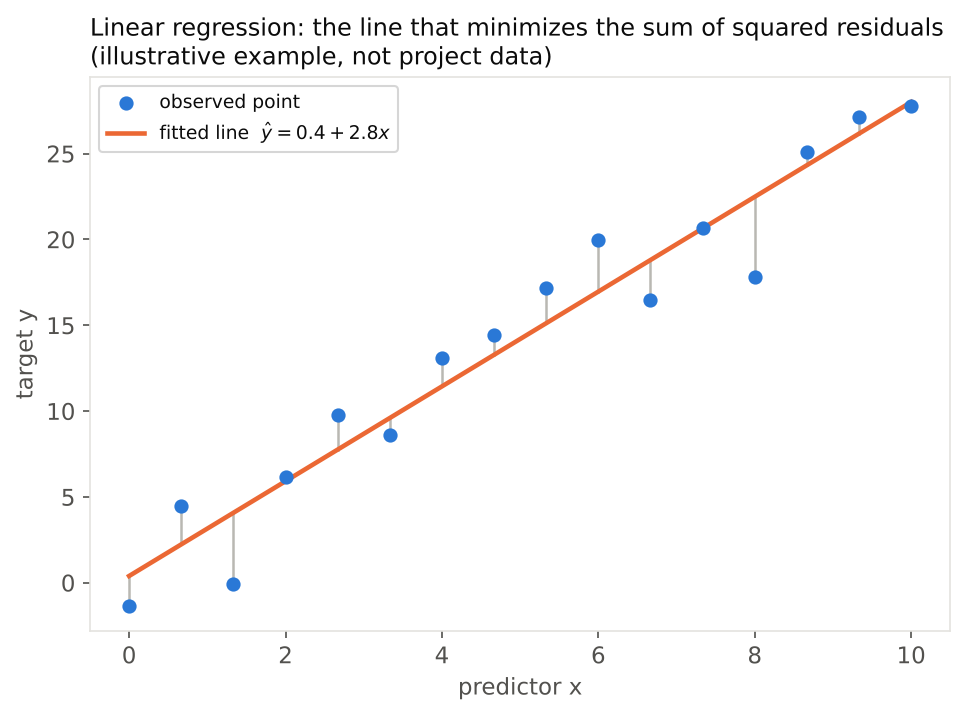
code/11_concept_diagrams3.py has been run.
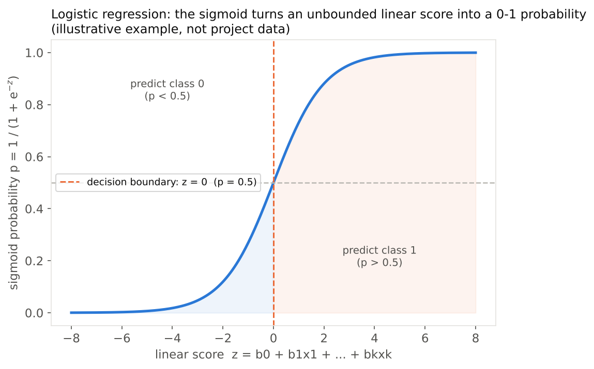
code/11_concept_diagrams3.py has been run.Linear regression target: a numeric flock-size estimate. site_daily_clean.csv has one row per reference site per day, but on most days no sighting was logged there at all, so a day with no record is not a "zero cranes" measurement, it is a missing one. Restricting to the 6,699 site-days where has_records is 1 and taking log10 of that day's total_count (always at least 1 on those days, so the log is always defined) gives the numeric target, log10_count. The features are six weather variables already in the cleaned file — temp_mean_c, precip_mm, om_snowfall_mm, om_wind_max_kmh, om_snow_depth_max_m, temp_7d_mean_c — plus day, already carried in the cleaned file as day-of-year (the same definition used on the DataPrep/EDA and Clustering tabs), as a calendar variable. A fresh 80/20 split, built with train_test_split and saved to reg_train.csv and reg_test.csv, gives 5,359 training rows and 1,340 disjoint testing rows; disjoint so that the test error reported below reflects days the model never got to see weather-and-count pairs for during fitting.

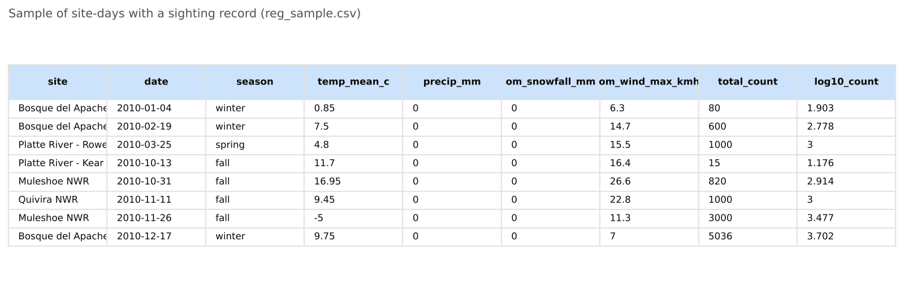
code/09_regression.py has been run.
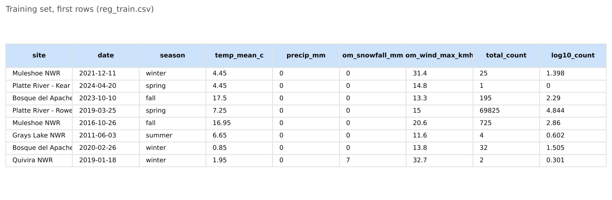
code/09_regression.py has been run.
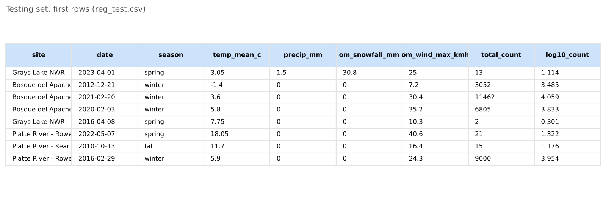
code/09_regression.py has been run.Logistic regression target: a two-class winter label. The target here, is_winter, is 1 when a sighting's season is winter and 0 otherwise, built from the same stratified 80/20 split already saved to nb_dt_train.csv and nb_dt_test.csv (134,142 training rows, 33,536 disjoint testing rows, winter making up about 19.9% of each). Reusing that exact split, with the same three features — lat_norm, lon_norm, log10_count — and the date still left out for the same reason as before, means this model's test rows are the identical rows used for every comparison below.

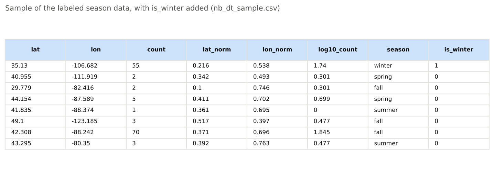
code/09_regression.py has been run.is_winter added, nb_dt_sample.csv.
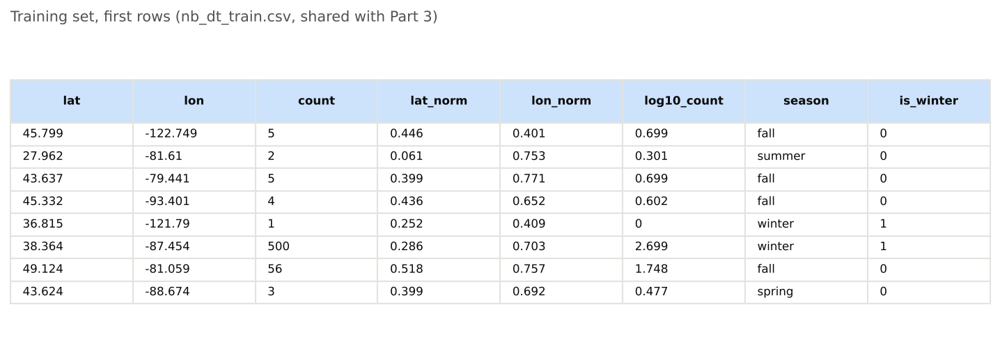
code/09_regression.py has been run.
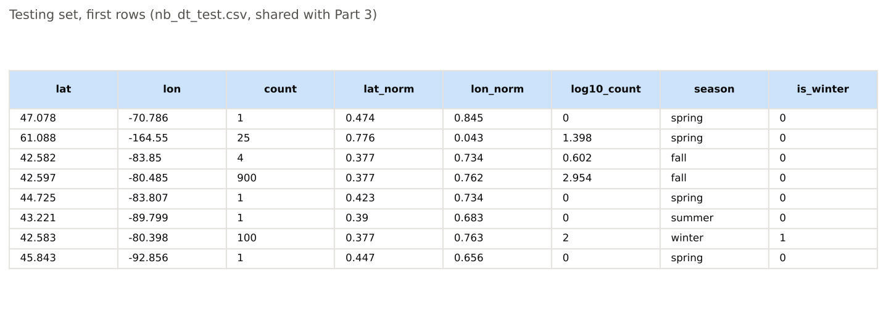
code/09_regression.py has been run.Written in Python with pandas, scikit-learn (LinearRegression, LogisticRegression), and matplotlib. Full code: code/09_regression.py (the overview diagrams above come from code/11_concept_diagrams3.py).
Linear regression: a weak but real signal. On the 1,340-row test set, the fitted model reaches RMSE 1.178 and MAE 0.949 on the log10(count) scale, with R² = 0.296 — weather explains roughly 30% of the day-to-day variation in how many cranes get logged at a site, leaving most of it to whatever weather does not capture (count rounding at hotspots, which species are actively staging that week, observer effort). A one degree Celsius rise in temp_mean_c is associated with a predicted count about 4.6% lower (10-0.0205 ≈ 0.954), holding the other weather variables fixed; a one millimeter rise in precip_mm is associated with about 1.76% lower (10-0.0077 ≈ 0.982). Both point the same direction: milder, drier days see somewhat smaller logged counts at these sites, consistent with the biggest counts coming from cold-season staging and wintering flocks rather than fair-weather spread-out birds. Of the remaining four coefficients, om_snowfall_mm is practically negligible (-0.3% per millimeter), and temp_7d_mean_c has the single largest per-degree weather effect in the whole model (-18.6% per degree, steeper than same-day temperature, a week of warming matters more than one warm day); om_wind_max_kmh and om_snow_depth_max_m both look outsized per unit (+6.4% per km/h and the -98.9% already flagged below) for the same reason, a "one-unit" change in either is far bigger than what a typical day-to-day swing in the data actually looks like, so neither is a realistic one-step change to picture. day's effect is tiny per calendar day (+0.14%) but compounds to roughly a 66% rise in predicted count from January 1st to December 31st with weather held fixed, the model's one echo of the seasonal cycle running underneath the weather variables themselves.

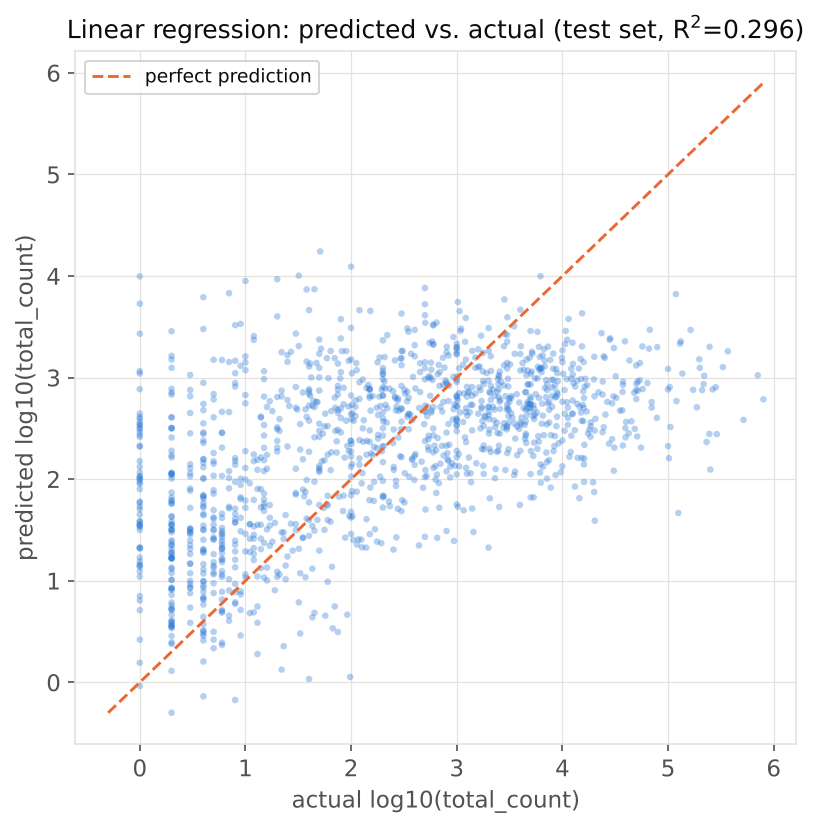
code/09_regression.py has been run.
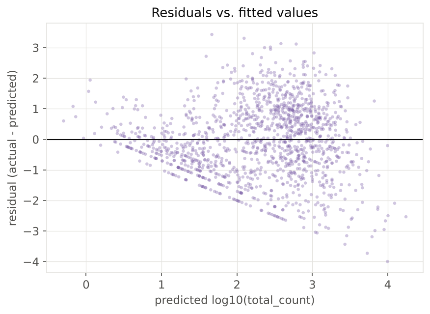
code/09_regression.py has been run.
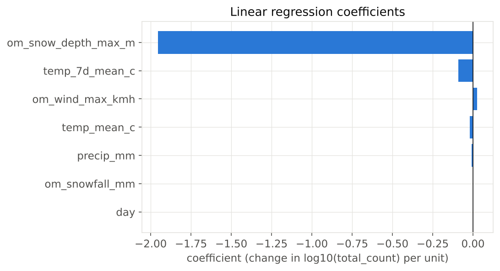
code/09_regression.py has been run.om_snow_depth_max_m looks dominant only because it is measured in meters, a unit where a "one-unit" change is enormous, not because snow depth matters more than everything else combined.Logistic regression: better at finding winter, still a modest model overall. On the 33,536-row test set the model reaches 81.4% accuracy, only a few points above the 80.1% a classifier gets for free by always guessing "not winter" (winter is 19.9% of the rows), so the headline accuracy number alone overstates how much it has actually learned. Looking at winter specifically is more informative: precision is 56.6% and recall is 29.1%, meaning just over half of its winter guesses are right, and it catches about three in ten of the true winter sightings. A one-unit rise in log10_count — a sighting ten times larger — multiplies the odds of that sighting being winter by about 2.06 (a 106% increase), which fits the project's own data: the largest staging and wintering flocks are logged in the cold months.
Compared with Part 3's Naive Bayes model on this identical test set, which reached 65.1% precision but only 4.8% recall for winter, logistic regression trades some precision for far more recall, correctly flagging about six times as many of the true winter sightings. Naive Bayes almost never guesses winter at all (hence the near-perfect precision whenever it does), while logistic regression's smoothly weighted combination of all three features is willing to call a sighting winter much more often, at some cost to how often those calls are right.

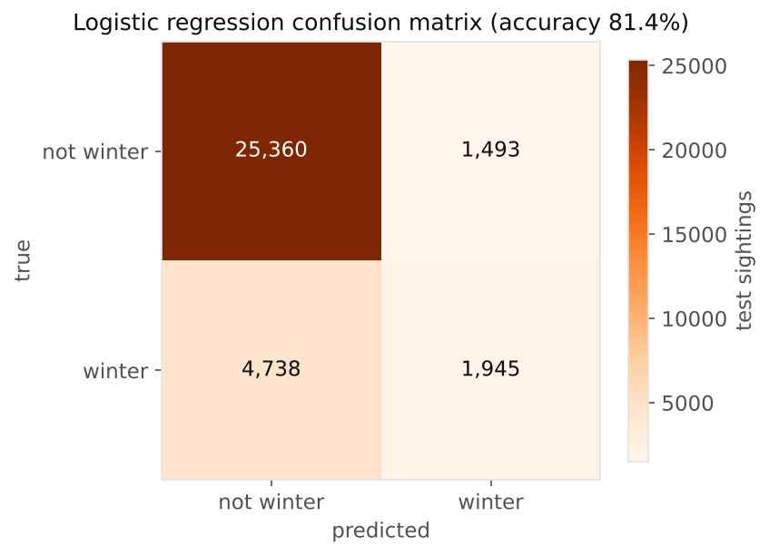
code/09_regression.py has been run.
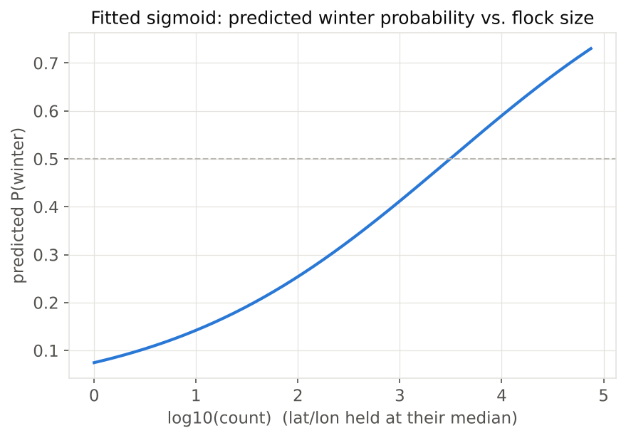
code/09_regression.py has been run.Weather alone explains a real but limited share of how many cranes get logged on a given day, around 30% of the variance on an already-compressed log scale, which says that temperature and precipitation matter but that a lot of what drives a big count day (exactly where the migration front is, how many observers were out, which flock happened to pass a hotspot) is simply not in this feature set. On the classification side, the clearest finding is that a sighting's flock size carries real information about whether it happened in winter: supersized counts in the hundreds or thousands are a winter signature at these reference sites, strongly enough that a model built on size and location alone can more than double its odds estimate for every tenfold jump in count. That the model still misses most individual winter sightings is a reminder that flock size and location describe a tendency, not a certainty, since plenty of smaller, more modest sightings happen in winter too.